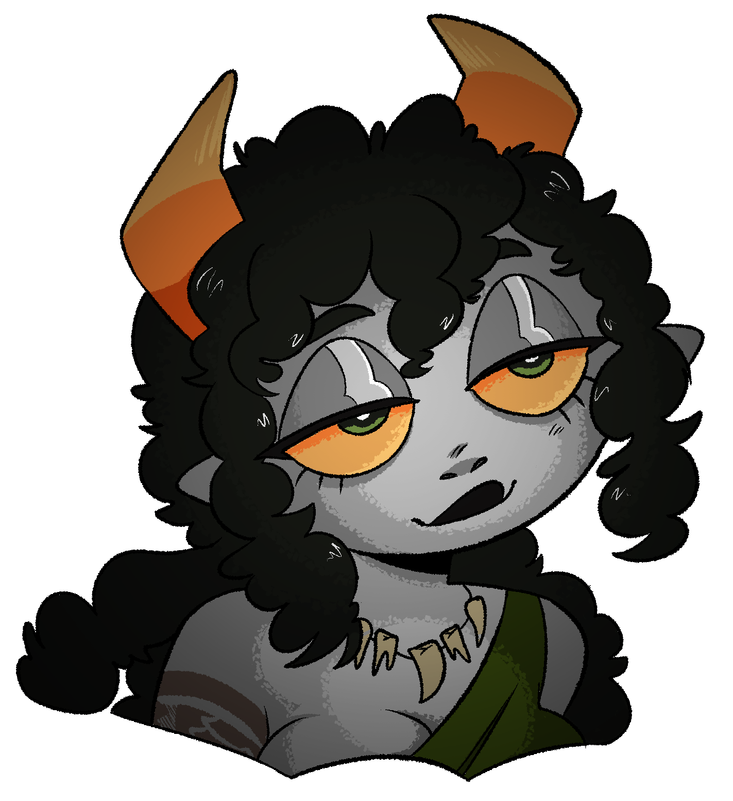

Ganhya
Bio
Ganhya is a chill girl who prefers to live life on the road, going from one friend's place to another. She has no desire to settle down and own a home of her own, finding comfort in the ever-changing scenery and the company of her closest friends. To her, the idea of being alone is unbearable. In her free time, Ganhya enjoys smoking weed and lounging on the couch. She has a very relaxed and carefree personality, often referring to her friends as her "homies". Despite her lack of ambition, Ganhya has a heart of gold and is always willing to lend a helping hand to those in need. Ganhya is known for her loving nature, and her friends know that they can always count on her to be there for them whenever they need her.
Appearance
She has the usual gray skin of her species and though her eyes aren't quite the same as the bright yellow eyes typical of her kind, having an orange tint to them. Her hair is frizzy and clumped up, adding to her carefree and relaxed appearance. Her horns are also an interesting feature, curving outwards before curving back in and she accentuates her eyes with black eyeshadow. For clothing, Ganhya prefers comfort and practicality over fashion. She wears a black one-strap tank top, which shows off her toned arms, and gray knee-length hot pants that allow her to move around freely. Around her waist, she wears a green cloth that is wrapped around a few times. On her feet, she opts for grayish-green sandals, perfect for the warmer weather. To accessorize, Ganhya wears a braided cloth bracelet on her wrist and an unknown animal tooth necklace around her neck. She also has a tattoo on her right bicep. Overall, Ganhya's appearance gives off a laid-back and easy-going vibe, perfectly matching her personality. She doesn't try to impress anyone with her clothing or appearance and instead focuses on being comfortable and relaxed.
Powers and Skills
Ghanakinesis - manipulation of marajuana smoke defensively and offensively
Charmcraft - The creation of charms with magical effects
Personality
Ganhya is a free-spirited and easygoing nomad who values her friendships above all else. Despite her laidback demeanor she actually fears the idea of being alone which is why she chooses to couch surf among her friends rather than find a permanent home of her own. In line with her relaxed nature, she can often be found smoking weed on the couch and enjoying the simple pleasures in life. Eating, chilling, and smoking are her main hobbies, but she also has a passion for creating charms. Despite her laziness, Ganhya has an incredibly loving personality and refers to her friends as her homies. She enjoys making them feel special by crafting unique and personalized charms, which she often gives as gifts. Her creativity and attention to detail are evident in her work, and her friends appreciate her thoughtful gestures. Ganhya's appearance reflects her carefree nature as she prioritizes feeling comfortable in her own skin and embracing her individuality. She loves the simple pleasures of life and doesn't aspire to any grand ambitions or material possessions. Don't judge her by her looks though because she is fiercely loyal to her friends and will go to great lengths to defend or help them out if they ever need it. She is also actually quite thoughtful and introspective. She often spends long periods of time lost in thought, contemplating the mysteries of the universe and the meaning of life. She also has a deep love for nature, often taking long walks in the woods or sitting by a river to admire the beauty of the natural world. She sees the interconnectedness of all living things and feels a sense of peace when she is surrounded by nature.